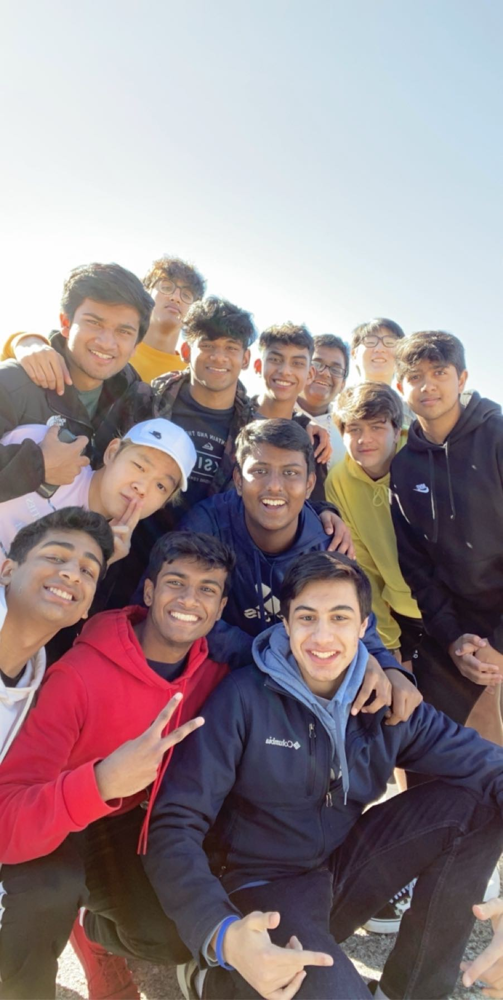
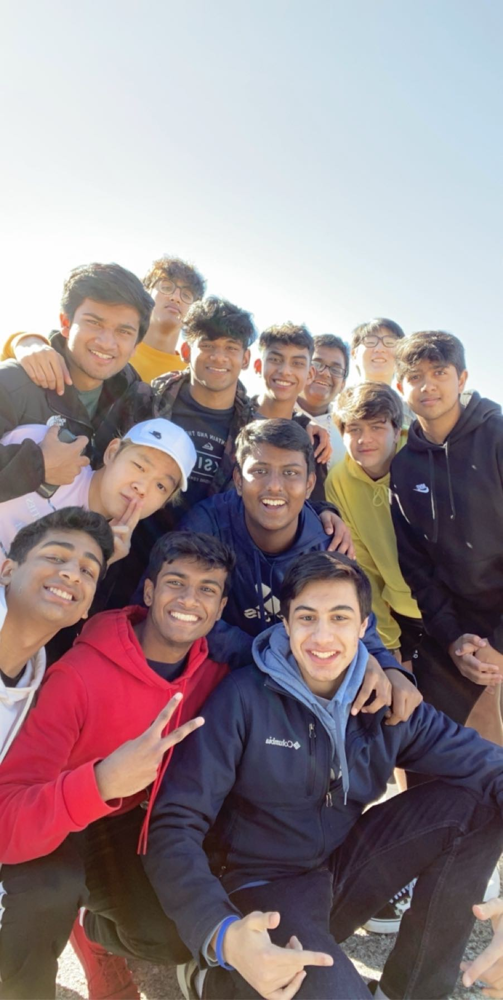

Shortly after my internship at the Perot Museum, I took a volunteering program to familiarize myself with a work environment. I worked there for 80 hours during my summer break. Our task during volunteering was to help the guests find their way around the museum and educate them on the exhibits in the museum.
I volunteered at the Food Bank of Oklahoma all through my freshman year. The food bank would have programs that would have volunteers package food which would be handed out to the homeless and less fortunate. I spent around 50 hours packaging food at the Food Bank and I enjoyed very moment of it.
I was a part of the National Honors Society for my last 2 years of high school. This program selects the students that were responsible, honest, smart, and hard-working. NHS members were to volunteer a certain amount at school and a certain amount outside of school. There were many programs that needed volunteer help like setting up the SAT testing rooms or helping set up track events. I completed my service to earn a NHS completion award.
I was an intern at the Perot Science Museum during 2019-2020. Every year, the Perot hosts an internship called Discovery Corps. Discovery Corp's interns were tasked with helping young school children learn bout science and social skills. We were also tasked with creating a science exhibit which would be displayed in the museum during the July 4th celebration. My leadership and teamwork cabibilites were tested and were improved by this internship.
 
